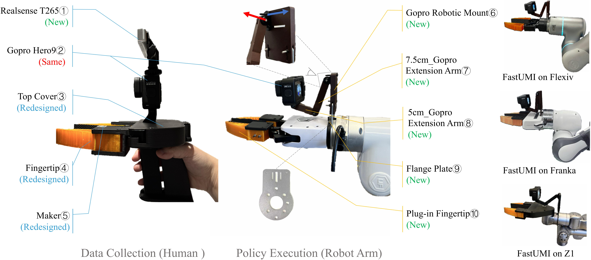
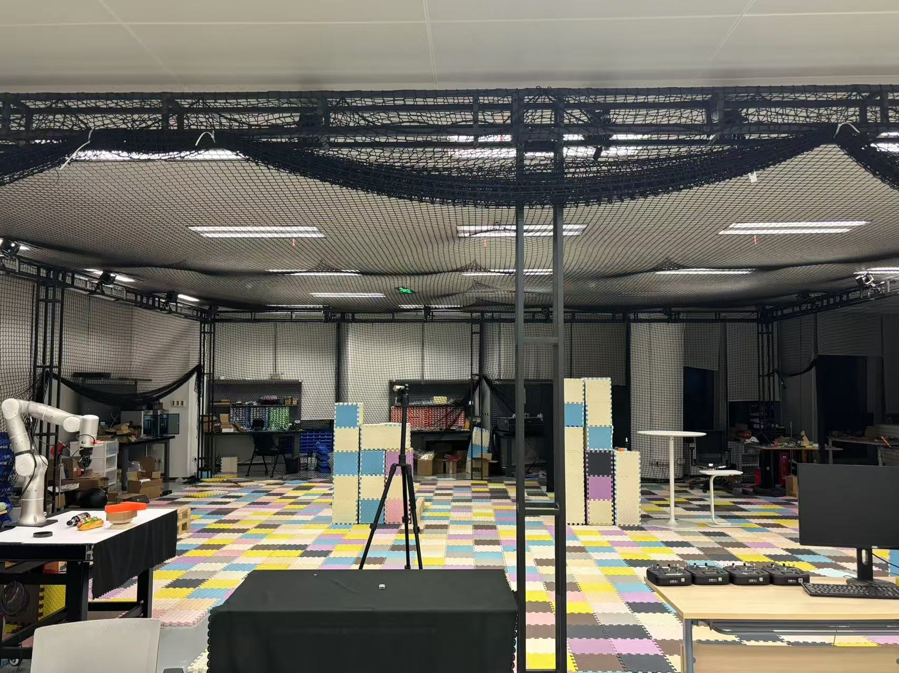

FastUMI
A Scalable and Hardware-Independent Universal Manipulation Interface and Dataset
Physical prototypes of FastUMI system
Project Overview
Real-world manipulation data involving robotic arms is crucial for developing generalist action policies, yet such data remains scarce since existing data collection methods are hindered by high costs, hardware dependencies, and complex setup requirements. In this work, we introduce FastUMI, a substantial redesign of the Universal Manipulation Interface (UMI) system that addresses these challenges by enabling rapid deployment, simplifying hardware–software integration, and delivering robust performance in real-world data acquisition.
Contributions
- 1) FastUMI adopts a decoupled hardware design and incorporates extensive mechanical modifications, removing dependencies on specialized robotic components while preserving consistent observation perspectives.
- 2) FastUMI refines the algorithmic pipeline by replacing complex Visual-Inertial Odometry (VIO) implementations with an off-the-shelf tracking module, significantly reducing deployment complexity while maintaining accuracy.
- 3) FastUMI includes an ecosystem for data collection, verification, and integration with both established and newly developed imitation learning algorithms, accelerating policy learning advancement.
- 4) We have open-sourced a high-quality dataset of over 10,000 real-world demonstration trajectories spanning 22 everyday tasks, forming one of the most diverse UMI-like datasets to date.
Dataset Visualization
We have collected 10,000 data samples across 20 tasks and have uploaded the dataset to Hugging Face.Original ACT Demos
A naive ACT algorithm is employed here to demonstrate the effectiveness of the 10K training samples we collected, as well as the overall performance of our data collection system.
Note: The performance of the robot in the video is related to our adopted ACT algorithm, and has no much connection to our FastUMI system.
Original Diffusion Policy Demos
A naive DP algorithm is employed here to demonstrate the effectiveness of the 10K training samples we collected, as well as the overall performance of our data collection system.
Depth-Enhanced Diffusion Policy Demos
An Depth-Enhanced DP algorithm is employed here to demonstrate the effectiveness of the 10K training samples we collected, as well as the overall performance of our data collection system.
RealSense T265 Trajectory Accuracy
We evaluated the RealSense T265 trajectory accuracy compared to our motion capture (MoCap) ground truth data. | Trajectory ID | Max Error (mm) | Mean Error (mm) | Min Error (mm) |
|---|---|---|---|
| Traj 1 | 15.669 | 9.710 | 1.968 |
| Traj 2 | 20.552 | 10.198 | 1.556 |
| Traj 3 | 19.803 | 12.235 | 5.334 |
| Traj 4 | 18.204 | 10.770 | 2.328 |
| Traj 5 | 21.698 | 11.112 | 5.359 |
| Traj 6 | 21.998 | 12.472 | 4.973 |
| Traj 7 | 17.925 | 11.457 | 4.851 |
| Traj 8 | 20.392 | 10.606 | 1.943 |
| Traj 9 | 14.394 | 6.654 | 0.798 |
| Traj 10 | 15.669 | 9.710 | 1.968 |
FastUMI 3D Model Display
Hardware (3D Printing and Purchase)Prototype
Top Cover
Gopro Extension Arm
Fingertip for XArm
Gopro Robotic Mount
Mask Piece
T265 Mount V2
FastUMI 2.0 Updates
In FastUMI 2.0, we have integrated a tactile module into the fingertip. We selected the 3D-ViTac solution (https://arxiv.org/abs/2410.24091) for several reasons, such as the convenience of cutting it into various sizes and its ability to handle severe deformation of the fingertip. Please note that the original 3D-ViTac cannot be used directly, so we have implemented extensive optimizations. Additionally, to address the discontinuation of the T265, we have adopted the RoboBaton Mini as a replacement (https://www.hessian-matrix.com/). We have successfully completed the manufacturing of the prototype.
Project Leader

Main Contributors


Phd Candidate